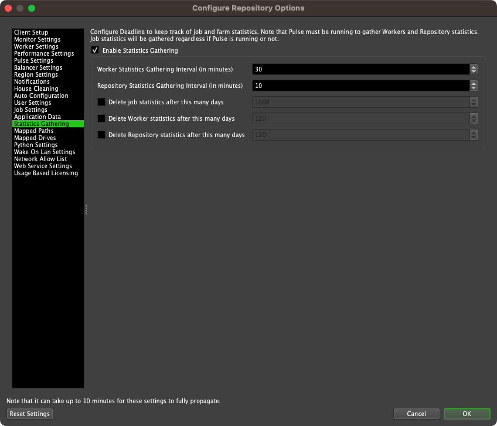
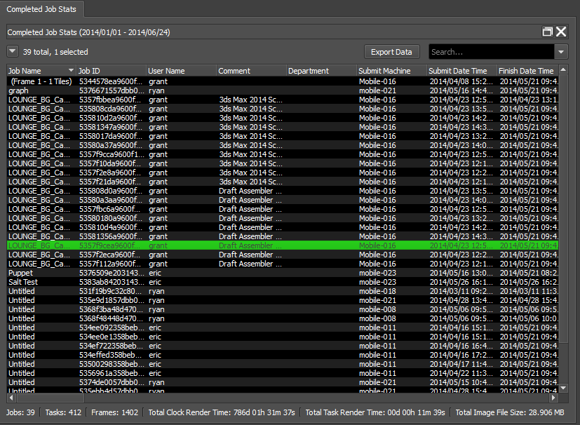
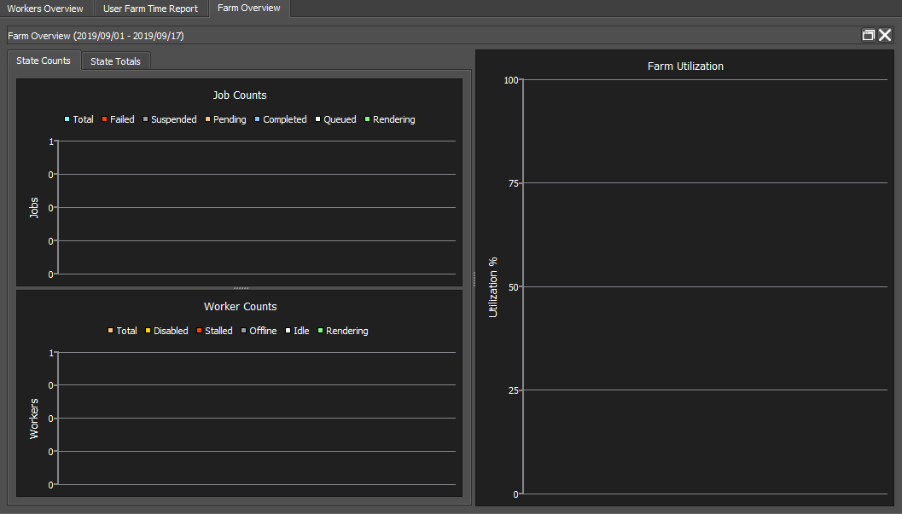
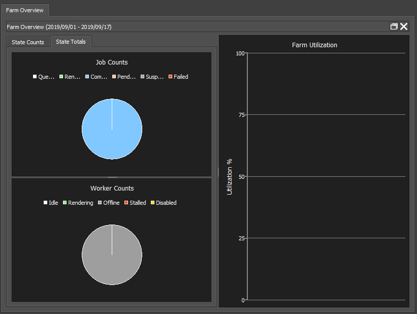
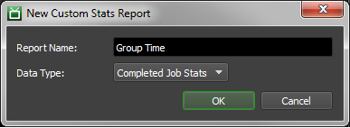
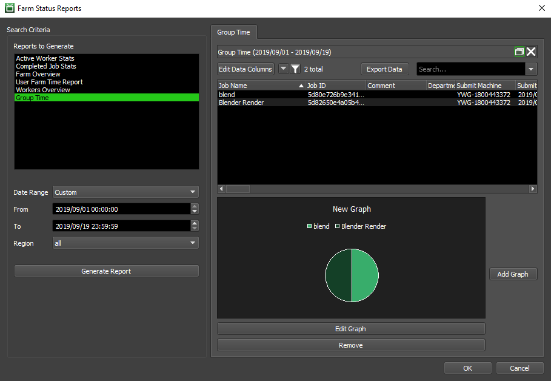
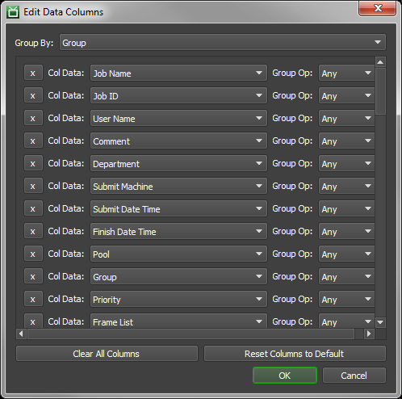
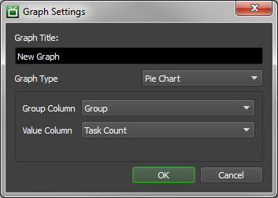

Farm Statistics¶
Overview¶
Deadline can keep track of some basic statistics. It can keep track of all of your completed Jobs so that you refer to them later. It stores the User that submitted the Job, when the Job was submitted, the error count, as well as some useful rendering metrics like render time, CPU usage, and memory usage. This data will be stored at job completion time on a best-effort basis. If the Worker exits before it can report back or changes are made to a job after it has completed, that data will not propagate to its statistics. This data will not match the duration of an AWS instance running the Worker and should not be relied on for estimating costs.
Statistical information is also gathered for individual Workers, including the Worker’s running time, rendering time, and idle time. It also includes information about the number of tasks the Worker has completed, the number of errors it has reported, and its average Memory and CPU usage. You can use all of this information to figure out if there are any Workers that aren’t being utilized to their full potential.
Note that some statistics can only be gathered if Pulse is running.
Enabling Statistics Gathering¶
You must first make sure Statistics Gathering has been enabled before Deadline will start logging information, which can be done in the Statistics Gathering section of the Repository Options.
Note that if Pulse is not running, only statistics for completed Jobs, User usage and Worker Statistics will be recorded. You must run Pulse to keep track of Worker Resource Usage and overall Repository statistics. When running, Pulse will periodically gather information about Workers Resource Usage and the general state of the repository, and record them in the Database.
Viewing Farm Reports¶
To view Statistics, open the Monitor and select ‘Tools’ -> ‘View Farm Reports’. This must be done in Power User mode, unless you have the proper User Privileges to do so.

From this window, you can specify which type of report(s) to generate, and a date range to filter the statistics. You can also specify a region to filter the statistics, but only the Active Worker Stats and Workers Overview reports will use it.
There are five default Reports that will always be available, but custom reports can also be created and saved for later use (see the ‘Custom Reports’ section below for more info).
Active Worker Stats¶
The Active Worker Stats report displays Worker usage statistics for the farm, which are logged by Workers as they are running. The statistics displayed by this report are generated by each individual Worker at regular intervals and do not require Pulse to be running.

Completed Job Stats¶
The Completed Job Stats report consists of a list of completed Jobs with detailed statistics. Pulse does not need to be running to gather these statistics.
Farm Overview¶
The Farm Overview report displays statistics about the Farm using graphs. The statistics displayed by this report are assembled by Pulse, and will therefore only be gathered if Pulse is running.
The State Counts section displays the statistics in terms of counts.
The State Totals gives a visual representation of the statistics in terms of percentages.
Workers Overview¶
The Workers Overview report displays the statistics for each Worker on the farm with graphs to help display the statistics. The statistics displayed by this report are assembled by Pulse, and will therefore only be gathered if Pulse is running.
The Workers Overview chart shows now many Workers were in each state (starting job, rendering, idle, offline, stalled, and disabled).

The Available/Active Workers charts show the number of Workers that are available, and the number of available Workers that are active.

The Individual Workers list and charts show the average CPU and Memory usage for individual Workers, as well as average time each Worker spends in each state.

User Farm Time Report¶
The User Farm Time Report displays the farm usage statistics for each User. Pulse does not need to be running to gather these statistics.

Custom Reports¶
Users can create their own custom Reports to control how the gathered statistics are aggregated and presented. By doing this, users can create their own arsenal of specialized reports that help to drill down and expose potential problems with the farm.
In order to create or edit Custom Reports you first need to be in Power User mode. Right-click in the Reports to Generate section to create or modify an existing custom report saved in your database. You can also import and export a custom farm report (*.json file) to share with others!
New: Create a new custom report, based on one of the existing stats objects.
Import Farm Report: Browse file system to import a custom farm report, stored as a *.json file.
Modify Farm Report: Modify an existing custom farm report saved in your database.
Delete Farm Report: Delete an existing custom farm report from your database.
Archive Farm Report: Export a custom farm report as an externally stored *.json file, so you can share with others.
By clicking the ‘New’ button, you will be prompted to specify a name for your new report and select the type of statistics which this report will display.
Once you’ve done that, you’ll be brought to the Edit view for your new Report. You’ll note that this is very similar to generating a report under normal circumstances, but with the addition of several buttons that allow further customization of your Report.
Chief among these new buttons is the ‘Edit Data Columns’ button, which will allow you to select which columns are displayed. You can also specify if you want to aggregate row information by selecting a Group By column, and a Group Op for each other column.
The way the aggregation works is similar to a SQL query with a “group by” statement. Data rows will be combined based on identical values of the Group By column, while the values of other columns will be determined by performing the Group Ops on the combined rows.
As a simple example to demonstrate how this works in practice, let us consider a case where you might want to view the error information on a per-plugin basis. We don’t have a built-in report to do this, but all this information is contained in Completed Job Stats. With that in mind, you can create a Custom Report based on Completed Job Stats to group by Plugin, and aggregate Error Counts and Wasted Error Time, as illustrated below.
Once you’ve specified which columns are displayed, and whether/how rows are aggregated, you can also add simple Graphs to your report. Simply click the ‘Add Graph’ button, and specify the type of graph you want along with the columns on which the graph should be based. Graphs are always based on all of the data presented the list view, and currently cannot be based on selection or a different data model. You can right-click on the graph once generated to save it as an image for your report to management!
Once you’re done customizing your new report, simply click the ‘OK’ button on the Farm Status Reports window, and your changes will be committed to the Database. Now, every time anyone brings up this dialog, they should be able to generate the report you’ve just created!
Custom Statistics¶
If you need to keep track of more information, we suggest writing your own tool that uses Deadline Command. Deadline Command can be used to query the repository for all sorts of information, like the current state of all the Jobs and all the Workers. You can have it print these out in an ini file format and use any ini file parser to extract the information (Python has a module for this). This is also handy if you want to post stats to a web page, or insert entries into a separate database.
Farm Report Columns¶
Active Worker Stats¶
Worker Name: The name of the Worker.
Region: The region assigned to the Worker machine.
Running Time: The total time the Worker has been online. This includes time spent House Cleaning, Idle and Rendering.
Rendering Time (UBL) (DEPRECATED): Starting with Deadline 10.1.23, Deadline and its components do not require a license. For older versions, this is the total time the Worker spent in the Rendering state while using Usage-Based Licensing.
Rendering Time (Non-UBL) (DEPRECATED): Starting with Deadline 10.1.23, Deadline and its components do not require a license. For older versions, this is the total time the Worker spent in the Rendering state not using Usage-Based Licensing.
Rendering Time (Total): The total time the Worker spent in the Rendering state.
Idle Time: The total time the Worker spent running Idle.
Completed Tasks: The total number of Tasks completed by this Worker.
Average Memory Usage: The average Memory Usage per second for the Worker.
Average CPU Usage: The average CPU usage percentage for the Worker.
Average Network Sent: The average rate of data sent by the Worker over the network.
Average Network Received: The average rate of data received by the Worker over the network.
Average Swap Usage: The average usage of the swap space by the Worker.
Average Disk Read: The average rate of data read from the Disk for the Worker.
Average Disk Write: The average rate of data written to Disk for the Worker.
Completed Job Stats¶
Job Name: The name of the Job.
Job ID: The ID of the Job.
User Name: The name of the user who owns the Job.
Comment: The comment for the Job.
Department: The department set for the Job.
Submit Machine: The machine that submitted the Job.
Submit Date Time: The date and time that the Job was submitted.
Start Date Time: The date and time that the Job was started.
Finish Date Time: The date and time that the Job was finished.
Pool: The Pool the Job belongs to.
Group: The Group the Job belongs to.
Priority: The Job’s priority.
Frame List: The frames from the scene that this job will render.
Frame Count: The total number of frames to be rendered for this Job.
Task Count: The total number of Tasks that the frames will be split into for this job.
Plugin: The Plugin used by a Worker to render this Job.
Extra Info (0-9): These columns are used for providing additional information about the Job. These can be overridden per Job.
Auxiliary Files: The number of Auxiliary files submitted with the Job.
Auxiliary File Size: The total file size of the Auxiliary files.
Machine Limit: The number of machines that can render this Job. If zero, than there is no Limit.
Error Count: The number of error reports generated for this Job.
Average Concurrent Tasks: The estimated average number of Concurrent Tasks used to render this Job. Calculated by dividing the total Task time by the elapsed render time of all the Tasks.
Clock Render Time: The elapsed time taken to complete the Job. Calculated by subtracting the Job’s start time for the Job’s completion time.
Total Task Time: The time taken by all Tasks. Calculated by adding the Task Times of all the Tasks together.
Average Task Time: The average time taken to complete a Task for this Job. Calculated by adding all the Task Times together and dividing that by the number of Tasks.
Median Task Time: The median of the Task times. Calculated by ordering all the Task times from smallest to largest and then taking the Task Time that falls directly in the middle of that list.
Total Task Startup Time: The total time taken for starting up Tasks.
Average Task Startup Time: The average time taken to start a Task. Calculated by adding all the Task Startup Times and dividing that by the number of Tasks.
Median Task Startup Time: The median of the Task Startup times. Calculated by ordering all the Task Startup Times from smallest to largest and then taking the time that falls directly in the middle of that list.
Total Task Render Time: The total amount of time taken to render all the tasks. Only includes the time the Task was actually rendering.
Average Task Render Time: The average time taken to render each Task. Calculated by adding all the Task Render Times together and dividing by the number of Tasks.
Median Task Render Time: The median of the Task Render Times. Calculated by ordering all the Task Render Times from smallest to largest and then taking the time that falls directly in the middle of that list.
Total Normalized Render Task Time: The total amount of time taken to render all Tasks, normalized.
Average Normalized Task Render Time: The average amount of time taken to render a Task, normalized. Calculated by adding all the Normalized Task Render Times and dividing by the number of Tasks.
Median Normalized Task Render Time: The median of the Normalized Task Render Times. Calculated by ordering all the Normalized Task Render Times from smallest to largest and then taking the time that falls directly in the middle of that list.
Average Frame Time: The average amount of time taken per frame. Calculated by finding the sum of time spent for each frame, which can be calculated by taking the Task Time for each Task and dividing it by the number of frames in that Task, and dividing that by the number of frames in the Job.
Average Frame Startup Time: The average amount of startup time taken per frame. Calculated by finding the sum of time spent starting up for each frame, which can be calculated by taking the Task Startup Time for each Task and dividing it by the number of frames in that Task, and dividing that by the number of frames in the Job.
Average Frame Render Time: The average amount of render time taken per frame. Calculated by finding the sum of time spent rendering for each frame, which can be calculated by taking the Task Render Time for each Task and dividing it by the number of frames in that Task, and dividing that by the number of frames in the Job.
Average Normalized Frame Render Time: The average amount of normalized render time taken per frame. Calculated by finding the sum of time spent rendering for each frame (normalized), which can be calculated by taking the Normalized Task Render Time for each Task and dividing it by the number of frames in that Task, and dividing that by the number of frames in the Job.
Median Frame Time: The median of the frame times. Calculated by ordering all the frame times from smallest to largest and taking the time that falls directly in the middle of that list.
Median Frame Startup Time: The median of the frame startup times. Calculated by ordering all the frame startup times from smallest to largest and taking the time that falls directly in the middle of that list.
Median Frame Render Time: The median of the frame render times. Calculated by ordering all the frame render times from smallest to largest and taking the time that falls directly in the middle of that list.
Median Normalized Frame Render Time: The median of the normalized frame render times. Calculated by ordering all the normalized frame render times from smallest to largest and taking the time that falls directly in the middle of that list.
Wasted Error Time: The time spent rendering the Job that resulted in an error being thrown.
Wasted Requeue Time: The time spent rendering the Job that was wasted due to the Task being requeued.
Total Output File Size: The total size of all the output from this Job.
Average Output File Size: The average size of an output file generated by this Job. Calculated by adding the file size of all the output files together and dividing that by the number of output files.
Median Output File Size: The median size of the output files generated by this Job. Calculated by ordering the sizes of all the output files for this Job from smallest to largest and then taking the file size that falls directly in the middle of that list.
Peak RAM Usage: The most RAM used by a Task for this Job.
Average RAM Usage: The average RAM used by Tasks in this Job. Calculated by adding all the RAM usage from each Task and then dividing that by the number of Tasks.
Median RAM Usage: The median of the RAM used by Tasks. Calculated by ordering all the RAM used by the Tasks in this Job from smallest to largest and the taking the RAM usage value that falls directly in the middle of that list.
Peak CPU Usage: The most CPU usage used to render a Task from this Job.
Average CPU Usage: The average CPU usage used to by Tasks from this Job. Calculated by adding all the CPU usage of all the Tasks in this Job and dividing that by the number of Tasks in the Job.
Median CPU Usage: The median of the CPU used by the Tasks in this Job. Calculated by ordering all the CPU usage values of all the Tasks in this Job from smallest to largest and then taking the CPU usage percentage that falls directly in the middle of that list.
Used CPU Clocks: The number of CPU clock cycles used by this Job.
Total CPU Clocks: The total number of CPU clock cycles that were used during the time that the Job rendered.
Peak Swap Usage: The most swap space used by a Task from this Job.
Average Swap Usage: The average swap space used by a Task from this Job. Calculated by adding together all the swap space usage of Tasks from this Job and dividing that by the number of Tasks in this Job.
Median Swap Usage: The median of the swap space usage by Tasks from this Job. Calculated by ordering the swap space usage of the Tasks from this Job from smallest to largest and taking the swap space usage value that falls directly in the middle of that list.
Workers Overview¶
Worker Name: The name of the Worker.
Machine Name: The name of the machine running the Worker.
Region: The region assigned to the Worker machine.
Starting Job State: Time spent by the Worker in the Starting Job State.
Rendering State: Time spent by the Worker in the Rendering State.
Idle State: Time spent by the Worker in the Idle State.
Offline State: Time spent by the Worker in the Offline State.
Stalled State: Time spent by the Worker in the Stalled State.
Disabled State: Time spent by the Worker in the Disabled State.
Average Memory Usage: The average Memory Usage per second for the Worker.
Average CPU Usage: The average CPU usage percentage for the Worker.
Average Network Sent: The average rate of data sent by the Worker over the network.
Average Network Received: The average rate of data received by the Worker over the network.
Average Swap Usage: The average usage of the swap space by the Worker.
Average Disk Read: The average rate of data read from the Disk for the Worker.
Average Disk Write: The average rate of data written to Disk for the Worker.
User Farm Time Report¶
User Name: The name of the User.
Completed Jobs: The number of the User’s jobs that were completed.
Total Render Time: The total amount of time spent rendering the User’s completed Jobs.

{kind=link}
{kind=link}
{kind=link}
{kind=link}
{kind=link}
{kind=link}
{kind=link}
{kind=link}
{kind=link}
{kind=link}
{kind=link}